신동민 · Software Developer
SOFTWARE · EMBEDDED · ROBOTICS PORTFOLIO
게임 개발·출시 경험을 갖춘 로봇 SW 개발자
신동민
개발 분야 로봇 SW / 임베디드 제어 / 시스템 통합
ROS 2 기반 예찰 작업 생성과 운송로봇의 주행·도킹·인계 통합을 구현했습니다.
Unity 클라이언트 개발과 인디게임 출시를 거쳐,
센서 입력을 장치 동작으로 연결하는 시스템을 개발하고 있습니다.
GitHub · github.com/Dongmins11 ↗기술역량
- 프로그래밍
- Python · C · C#
- 로봇 주행·작업
- ROS 2 Jazzy · Nav2 FollowPath · TF2 · AMCL · FSM
- 임베디드·장치 제어
- STM32 · FreeRTOS · ADC/DMA · UART · Bluetooth · IMU/PID
- 화면·병렬 처리
- PyQt5 · QThread · Multiprocessing · Shared Memory · Streamlit
- 산업 자동화
- PLC · Ladder Logic · GX Works2 · GT Designer3
- 개발·협업
- Unity · Git · GitHub · Jira · Confluence
주요 이력
- 2026
- 임베디드·로봇 프로젝트 | 장치 제어·시스템 통합, 예찰·운송 로봇 개발
- 2025.02 - 2025.09
- 3인 인디게임 팀 | 전체 프로그래밍·구조 설계 전담, 모바일 게임 출시
- 2024.05 - 2025.02
- 이지테크핀 | Unity 클라이언트 기능 개발, API 연동, 결제·광고 오류 대응
SHIN DONGMIN / PORTFOLIOPROFILE & SKILLS
PROJECT 01 / 다중 로봇 · 주행 · 시스템 통합
Many Farm · 다중 로봇 스마트팜
예찰 작업 생성부터 운송 주행·정밀 도킹·인계까지
팀 7명 · 실물 로봇 / 웹 관제 / Isaac Sim
예찰로봇이 만든 작업 정보를 바탕으로 수확·운송·선별 로봇이 협업하는 스마트팜 시스템입니다.
담당 역할
- 주행 구현
- GeoJSON·Dijkstra 경로 생성과 Nav2 FollowPath 연결
- 예찰 개발
- 정지 관측·과실 매칭·작업 윈도우 및 수확 정차점 생성
- 후반 운송 통합
- ArUco·LiDAR 정밀 접근과 인계·하역·복귀 상태 연결
- 실행 상태 제어
- ROS 2 Action/Service와 FSM으로 이동·작업·장치 완료 조건 연결
팀 담당: 인식 모델 학습, 수확팔, 운송 기구·펌웨어, 웹 관제, 시뮬레이션
 실물 시험 공간 · 예찰·수확·운송·선별 장치
실물 시험 공간 · 예찰·수확·운송·선별 장치 팀 웹 관제 · 작업 상태와 선별 결과
팀 웹 관제 · 작업 상태와 선별 결과시스템 구성과 작업 흐름
- 01예찰
관측·작업 생성 - 02수확
정차·재인식·수확 - 03운송
인계·이송·하역 - 04선별
색상 분류
 관제 - ROS 2 공통 인터페이스 - 실물·시뮬레이션
관제 - ROS 2 공통 인터페이스 - 실물·시뮬레이션SHIN DONGMIN / PORTFOLIOMANY FARM / OVERVIEW
PROJECT 01.1 / 개인 구현 · 경로 생성
GeoJSON에서 작업 목표까지 경로 생성
방향 그래프 · Dijkstra · 간선 중간 목표 · ROS 2 Path
노드·간선으로 정의한 주행선에서 목표까지의 경로를 계산하고, Nav2가 따라갈 좌표 목록으로 변환했습니다.
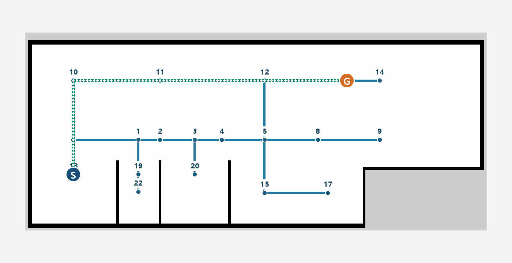
실제 PGM + GeoJSON · S 시작 / G 목표 / 초록선 선택 경로4.239 m 경로→110개 Path 좌표→FollowPath / RPP
- 경로 탐색
- 방향 간선의 거리 합을 비교하는 Dijkstra로 연결 경로 선택
- 작업 목표 연결
- 목표를 가까운 간선에 투영하고, 마지막 간선은 목표까지만 사용
- 주행 명령 생성
- 최대 4cm 간격으로 보간하고 최종 작업 방향 yaw를 포함해 FollowPath에 전달
목표마다 노드를 추가하지 않아도 작업 위치까지 연결4cm는 Path 좌표 간격이며 주행·정차 정확도를 뜻하지 않습니다.
10월 31일 지도 · 시작 (0.046, -1.120) m, 목표 (3.200, -0.035) m.
저장소 RouteGraph.plan() 계산 예시이며 실측 주행 궤적은 아닙니다.
SHIN DONGMIN / PORTFOLIOMANYFARM / ROUTE PLANNING
PROJECT 01.1 / 경로 생성 이후 · 추종 과정
생성한 경로를 따라 목표까지 이동
초록: 생성 경로 · 파랑: 이동한 구간 · 로봇 표시: 현재 위치

01 · 경로 생성 완료
시작점에서 목표까지의 전체 Path가 준비된 상태
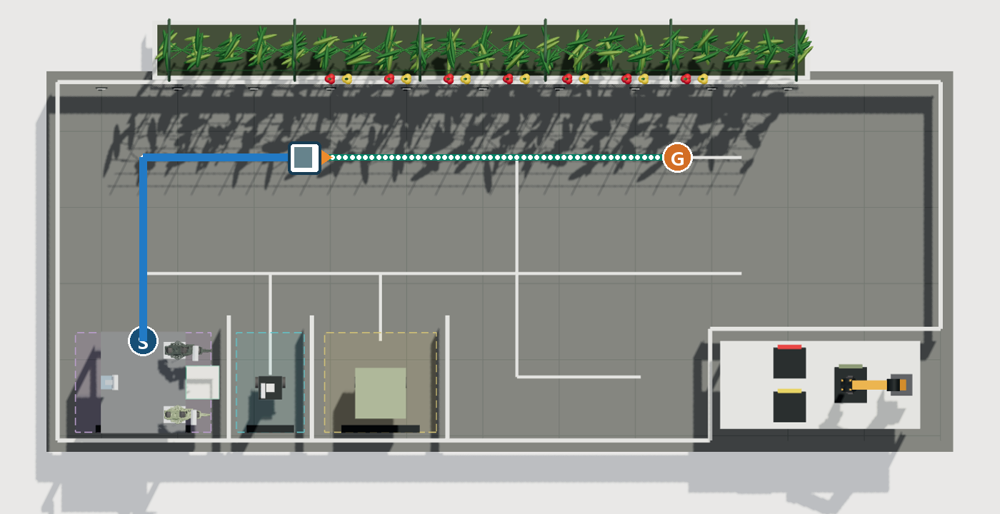
02 · 경로를 따라 이동
방향을 바꾸고 경로 중간 지점까지 이동한 상태

03 · 목표점 도착
간선 끝 노드까지 가지 않고 지정한 작업 위치에서 종료
구현 연결 RouteGraph → Path 보간 → Nav2 FollowPath → RPP 속도 명령
계산 경로의 이동 순서를 3D 탑뷰 위에 표시한 설명용 정지 화면입니다.
RPP 실행 로그·물리 시뮬레이션·실물 주행 기록을 재현한 그림은 아닙니다.
SHIN DONGMIN / PORTFOLIOMANYFARM / PATH FOLLOWING
PROJECT 01.2 / 개인 구현 · 예찰
RGB-D 관측을 수확 작업으로 변환
동일 과실 매칭 · 작업 윈도우 갱신 · 차체 정차점 생성
과실 좌표만으로는 수확로봇이 설 위치를 정할 수 없습니다. 관측 결과를 누적하고, 팔이 작업할 영역과 차체가 이동할 목표를 구분해 관제로 전달했습니다.
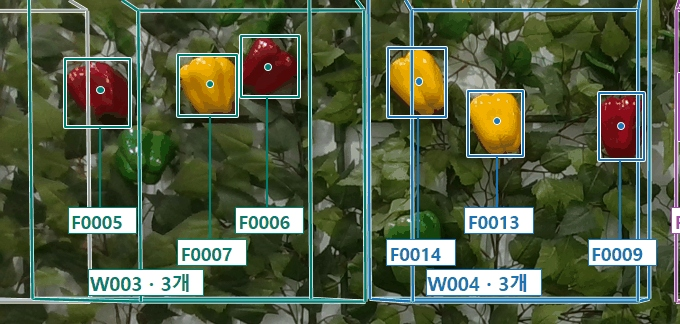
좌측 영역 확대 · 과실 ID와 W003·W004의 작업 수량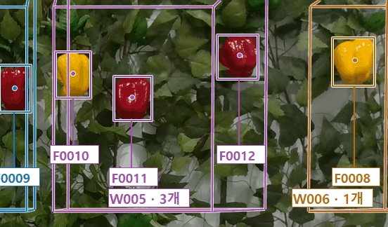
우측 영역 확대 · W005·W006의 과실 소속과 작업 수량SHIN DONGMIN / PORTFOLIOMANY FARM / SCOUTING
PROJECT 01.2 / 예찰 · 구현과 문제 해결
동일 과실 매칭과 작업 배정
관측 누적 → 대표 위치 갱신 → 작업 윈도우·정차점 생성
- 01경로 이동·정지
- 02RGB-D 관측 누적
- 03ID 매칭·윈도우 갱신
- 04수확 정차점 생성
주요 구현
- 관측 FSM
- 정지 확인 뒤 관측하고, 결과 저장 후 다음 관측 또는 복귀 상태로 전환
- 데이터 연관
- 거리 기준 안의 후보를 일대일 매칭하고, 대응이 없는 관측만 새 ID로 등록
- 대표 위치 갱신
- 관측 이력을 누적하고 중앙값 재검증 정책으로 대표 좌표·기존 윈도우 소속 재검토
- 정차 목표 계산
- 작업 윈도우 중심과 팔 장착 오프셋으로 차체 목표를 계산하고 수확 주행 그래프 라인에 배치
과실 위치 ≠ 차체 정차 위치관측 과실 → 작업 윈도우 중심 → 팔 오프셋 반영 → 주행선 위 차체 목표수확팔은 도착 후 대상을 다시 인식해 작업합니다.
문제 해결 · 같은 과실의 중복 등록
- 문제
- 관측점이 달라지면 같은 과실의 좌표가 달라져 새 ID로 쌓이거나 윈도우 소속이 변했습니다.
- 해결 방안
- 과실 매칭과 윈도우 배정을 분리했습니다. 기존 ID에 관측을 누적한 뒤 대표 위치를 갱신하고, 기존 창의 소속·겹침을 다시 판단했습니다.
- 해결 결과
- 기존 ID를 유지하며 작업 배정을 갱신하는 흐름을 구현했습니다. 실제 과실 대응률과 중복·누락은 추가 검증 대상입니다.
SHIN DONGMIN / PORTFOLIOMANY FARM / SCOUT IMPLEMENTATION
PROJECT 01.3 / 개인 구현 · 후반 운송 통합
마커·LiDAR 도킹과 인계 상태 제어
ArUco 상대 위치 접근 · LiDAR 최종 정차 · 인계·하역 상태 제어
운송로봇의 정밀 도킹과 팀원 기구 서비스의 개폐·인계·하역 동작을 하나의 실행 흐름으로 통합했습니다.
- 정밀 접근
- ArUco 상대 위치 기반 접근과 LiDAR 기준면 거리 제어 연결
- 인계 조건
- 도착·준비·개폐·인계 완료·이탈 조건을 나누고 상태 전환에 연결
- 장치 서비스
- 팀의 기구 제어 서비스와 운송 상태를 연동해 하역·복귀까지 통합
 실물 도킹 · 운송로봇과 수확로봇의 인계 위치
실물 도킹 · 운송로봇과 수확로봇의 인계 위치- 01경로 주행
- 02마커 확인·LiDAR 접근
- 03인계·하역 완료 확인
- 04이탈·스테이션 복귀
문제 해결 · 접근 중 바뀌는 LiDAR 기준면
- 문제
- LiDAR 높이는 고정돼 있어도 접근하면서 수확로봇의 바퀴·기둥이 번갈아 잡혀 거리 기준이 달라졌습니다.
- 해결 방안
- 거리값 보정보다 연속된 면 확보가 필요했습니다. 작은 폼보드를 부착해 기준면을 넓히고, 마커로 확인한 대상의 같은 면을 추적했습니다.
- 해결 결과
- 폼보드와 기준면 추적을 결합해 해당 도킹 문제를 해결했습니다. 반복 정차 위치·방향 오차의 정량 평가는 남은 과제입니다.
SHIN DONGMIN / PORTFOLIOMANY FARM / TRANSPORT
PROJECT 01.3 / 운송 · 도킹 기준면 비교
LiDAR가 계속 볼 수 있는 면 만들기
고정된 센서 높이에서 접근 · 작은 폼보드로 기준면 확장
 01 부착 전 · 접근하면서 수확로봇의 바퀴·기둥이 잡혀 거리 기준이 달라짐
01 부착 전 · 접근하면서 수확로봇의 바퀴·기둥이 잡혀 거리 기준이 달라짐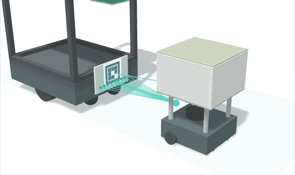
02 부착 후 · 마커로 확인한 대상의 폼보드 기준면을 계속 추적동작 원리를 설명하는 3D 재구성입니다. 로봇 위치·크기는 설명용 근사입니다.
SHIN DONGMIN / PORTFOLIOMANY FARM / DOCKING REFERENCE
PROJECT 02 / AI · 사용자 화면 · 병렬 처리
POCO · AI 자세 코칭 모니터암
사용자 화면·실행 구조 통합과 IMU 기반 PID 수평 보정
팀 4명 · Raspberry Pi 5 · 비전 코칭에서 모니터암으로 확장
카메라로 자세를 분석해 교정 피드백과 일일 리포트를 제공하고, 정상 자세에서는 모니터 위치와 수평을 조절하는 시스템입니다.
담당 역할
- UI·리포트
- PyQt 프로필·보정·측정 화면, CSV 기록과 Streamlit 리포트
- 실행 구조
- QThread 카메라 수집, Pose·Hardware 프로세스 분리와 기능 통합
- 수평 제어
- IMU 기준값과 현재 기울기의 오차를 PID로 계산해 Motor 3·4 제어
팀의 자세 분류 모델·모니터 위치 추종 기능을 통합했습니다.
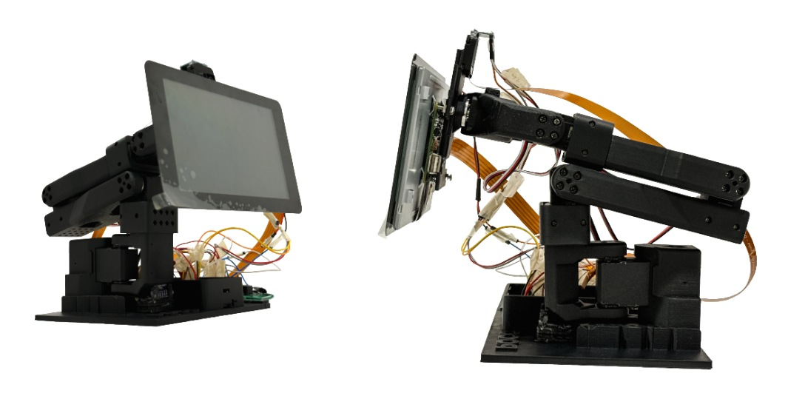
실물 장치 · 제작한 4축 모니터암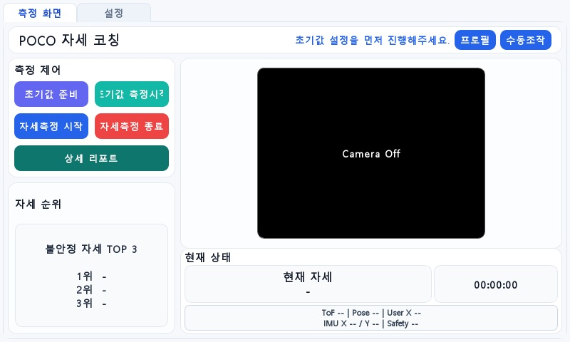
PyQt · 프로필·보정·측정·장치 상태 화면프로세스·데이터 분리
PyQt / MainUI 갱신·명령 / 카메라 QThread
Pose ProcessShared Memory 영상 → 자세 추론
Hardware ProcessQueue 명령·상태 / 센서·모터 전담
문제 해결 · 영상 누적으로 늦어진 자세 피드백
- 문제
- 카메라 입력 약 30 FPS와 분석 약 25~29 FPS의 차이로 대기 프레임이 쌓여 과거 자세가 표시됐습니다.
- 해결 방안
- 버퍼를 늘리는 대신 대기 중 최신 프레임을 선택했습니다. 과거 프레임을 건너뛰고 로컬 복사본으로 추론해 공유 슬롯을 빠르게 반환했습니다.
- 해결 결과
- 보고서의 당시 32슬롯 환경에서 자세 판단 완료 지연 약 1.35초 → 50ms, 대기 프레임 32 → 1~3으로 감소했습니다.
측정 범위: 당시 개발완료보고서의 근삿값. 모델 추론 속도가 아닌 프레임 대기 지연 개선이며, 현재 코드는 4슬롯입니다.
프로젝트 상세 · 구현 코드와 측정 근거 ↗SHIN DONGMIN / PORTFOLIOPOCO / UI & PROCESS ARCHITECTURE
PROJECT 03 / 임베디드 · RTOS · 통신
KICK-CAN · STM32 분산 RC카
RFID 인증·조이스틱 처리·무선 명령 송신을 담당한 Controller 개발
팀 4명 · Controller / Main / Sensor / Display 분산 구성
RFID 인증을 거친 사용자가 무선 조종기로 RC카를 운전하고, 차량 노드들은 CAN 통신으로 구동·센서·표시 정보를 공유합니다.
담당 역할
- 조종기 제작
- Controller 하드웨어 구성과 펌웨어 구현
- 인증·입력
- RFID 인증·연결 상태에 따른 조작 허용, ADC/DMA와 EMA 필터로 입력 처리
- 명령 전송
- 12바이트 패킷 생성, XOR 체크섬, UART Mutex로 Task 간 송신 동기화
Controller의 인증·입력·송신을 직접 구현하고, 차량 측 노드와 통합했습니다.
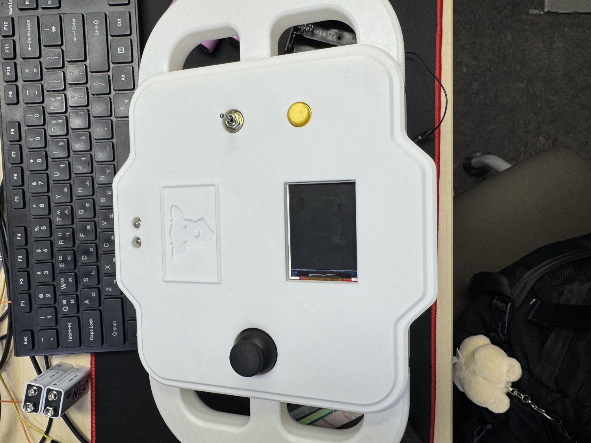
직접 제작한 RFID 무선 조종기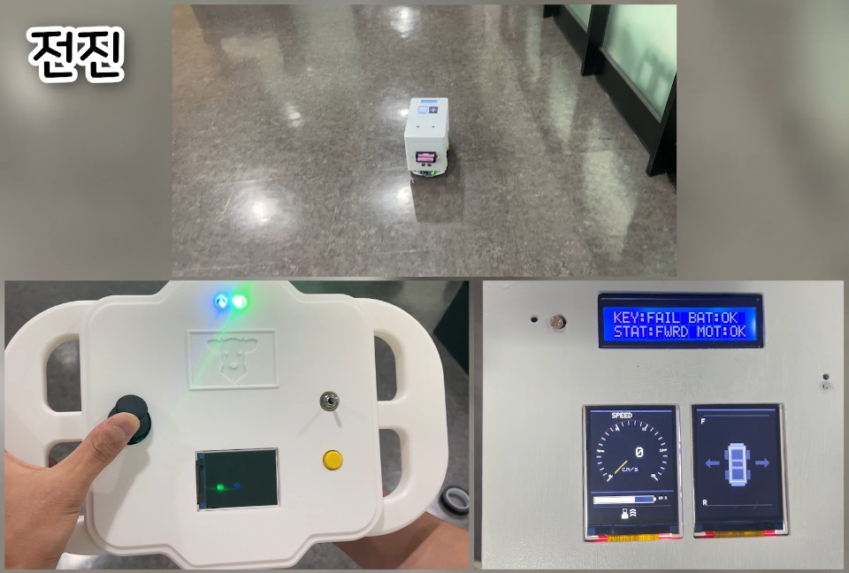
실물 연동 · 조종 명령에 따른 주행12바이트 명령 프레임
0xAAStart · 1B
Dest / Cmd각 1B
Data주행·조향 등 · 7B
XOR앞 10B 검사 · 1B
0xFFEnd · 1B
문제 해결 · 프레임 경계와 수신 버퍼 충돌
- 문제
- UART 수신 프레임의 시작 위치가 밀리고 DMA가 처리 중인 버퍼를 덮어써 차량이 명령을 해석하지 못했습니다.
- 해결 방안
- 개인 구현: Start/End·XOR 프레임과 UART Mutex 송신. 팀 통합: Main Node 수신 DMA를 Normal 방식으로 변경하고 수신·처리를 분리했습니다.
- 해결 결과
- 유효 프레임 검사와 버퍼 처리 흐름을 맞춰 인증·주행·스위치 명령을 차량 동작과 연결했습니다.
Controller 조이스틱 ADC의 Circular DMA와 Main Node 통신 수신 DMA는 별개입니다.
Controller 코드 · 통신 규약 ↗SHIN DONGMIN / PORTFOLIOKICK-CAN / CONTROLLER
PROJECT 04 / 산업 자동화 · 시퀀스 제어
PLC · 소재 분류·적재·배출 자동화
선택·전체 배출 시퀀스와 작업 전환 인터락
팀 프로젝트 · 자동화 창고 공정 제어
금속·비금속 소재를 분류해 보관하고, HMI에서 선택한 위치의 소재 또는 창고 전체 소재를 배출하는 시스템입니다.
담당 역할
- 선택·전체 배출
- 소재가 있는 위치를 찾아 배출 대상을 정하고 순차 처리
- 단계별 제어
- 저장 위치 이동·흡착·컨베이어 배출·복귀 조건 구성
- 작업 전환
- 현재 시퀀스 완료 후 다음 모드로 전환, 중복 명령 인터락
팀의 소재 공급·분류·적재, 위치 관리와 HMI를 배출 제어에 연결했습니다.
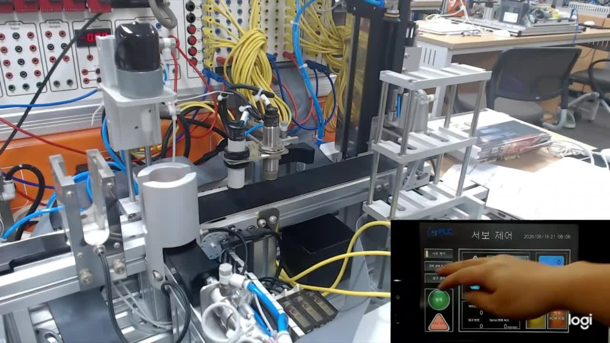
자동화 창고 · 소재 공급·분류·적재·배출 장치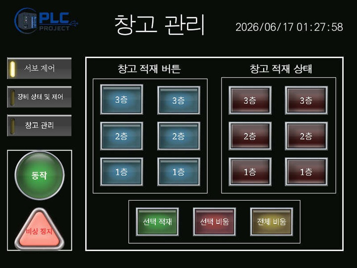
HMI · 저장 위치와 배출 방식 선택배출 실행 순서
- 01저장 상태 확인
빈 위치 제외 - 02위치 이동·흡착
- 03컨베이어 이동·해제
- 04다음 대상·복귀
문제 해결 · 선택 배출 중 전체 배출 명령 개입
- 문제
- 선택 배출 도중 전체 배출을 요청하면 두 모드가 동시에 개입해 장비 동작 순서가 꼬였습니다.
- 해결 방안
- 진행 중인 배출 상태를 확인하는 인터락을 추가했습니다. 현재 모드를 유지하고 다른 배출 명령은 실행되지 않도록 제한했습니다.
- 해결 결과
- 현재 작업이 완료될 때까지 다른 배출 모드의 개입을 차단하고, 완료 조건에 따라 다음 작업으로 전환했습니다.
상태 정보 활용6개 저장 위치 × 금속·비금속 2종을 12비트로 관리하는 팀 상태 정보를 사용해 배출 대상을 판단했습니다.
프로젝트 상세 · 시퀀스와 실물 시연 ↗SHIN DONGMIN / PORTFOLIOPLC / SEQUENCE & INTERLOCK